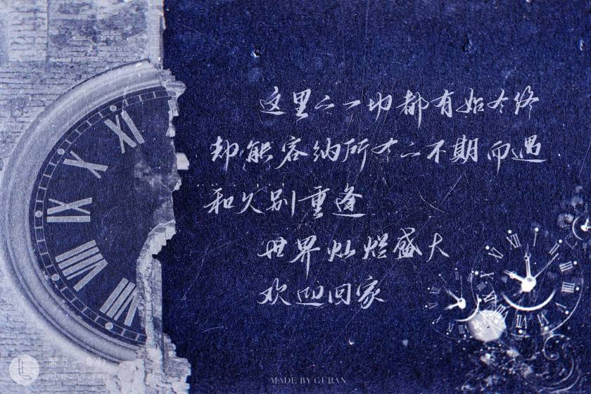
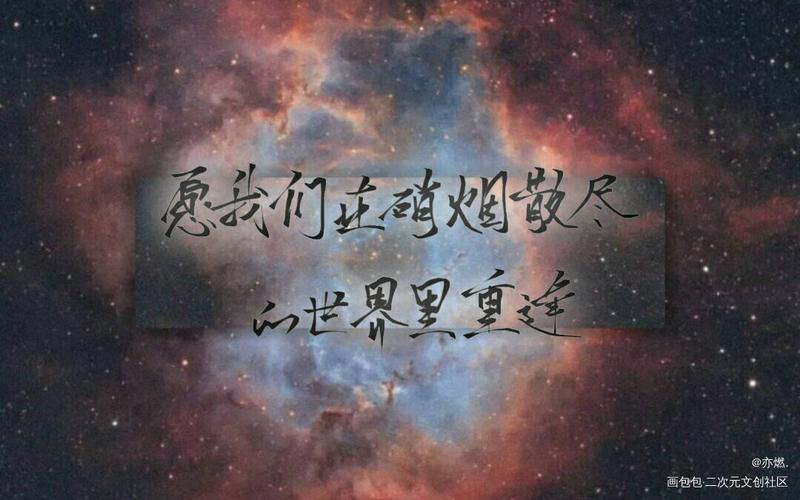

全球高考
点击了解更多
点击了解原文
作品简介
全球大型高危险性统一考试，简称全球高考。真身刷题，及格活命。考制一月一改革，偶尔随机。
梗概：两位大佬对着骚。

主要人物简介
| 人物名称 |
代号 |
身份 |
| 游惑 |
A |
初代监考官 |
| 秦究 |
001,Gin |
二代监考官 |
| 楚月 |
Z |
初代监考官 |
| 闻远 |
922 |
二代监考官 |
| 系统 |
154 |
系统分离出来的人性部分，二代监考官 |
| 高齐 |
1006,D |
二代监考官，初代监考官 |
| 赵嘉彤 |
E |
初代监考官，二代监考官 |
| 略 |
021 |
二代监考官 |
| 于闻 |
略 |
考生 |
| 于益国 |
略 |
考生 |

语录
这里的一切都有始有终，却能容纳所有不期而遇和久别重逢
爱恨真的是奇怪的东西，有的早早腐烂入土，有的刻骨。
一切经历不论好坏都有价值，至少组成了他们完整的人生。
爱你，不是记忆，而是本能。
他想，他见过一个光明炽热的人，靠着这个，他可以走过所有寒冬。
我不是来救你的，是来爱你的！
我不会怕你，不会疏远你，不会觉得你是什么令人不安的怪物。我这么爱你。
怪物之所以是怪物，不是因为做了什么，而是它为什么做。那才是它丑陋的，令人厌恶的根源。你即便舔了血，也永远不会是怪物。
两千三百一十二天，他们相遇在寒风溯雪中，以为是初见，其实是重逢。
我叫秦究，我来找我的真实。
他们之间，从不需要一边倒的安慰和怜惜。
万幸，兜兜转转这么久，他还是见到了。
是万家灯火，是喧嚣人间。
亲爱的，我把自己放在你耳边，你听得到的吧，愿我们在硝烟散尽的世界里重逢。
就算系统把我扔出去，清掉记忆什么都没留，我也会回来的。
遥远的前方，是人群和大火。后方隔着雾的山上是监考小屋。他们在警告声中接吻。
有人说，味道和记忆捆得最紧，它让时光变得生动。
密钥生效，记忆就会恢复。里面有他的过往，他的信念，以及他的爱情。
不知多少光年外的星辉穿过薄透的靛青色夜空，落在高楼一格一格的窗玻璃上，再穿过浅色窗帘，落进房间里。
三年前，他们没能熬到这个阶段。三年后，他们已经无所畏惧。
从此以后，他都不会再食言了。
他们的任务是瓦解系统，他们的信仰是让这里的所有人终归自由。他们曾经发过誓，如果敢死队的成员不再隐藏、坦诚相见，那一定是在一切都将结束的那一天，在终点之前。
说来荒谬。镜子里的世界一片虚幻，却可以找到真实。考场横纵无界，却只有这间狭小的禁闭室不限自由。
两个人的事只有一个人记得，是最孤单的。
秦究说:你站的地方太暗了，我总是看不清。
所以，他找来了亮一点的东西，钉在自己的安全区。这样，不管身在哪里，都能被对方看到了。
这个叫秦究的人，永远也不可能把伤害的范围控制在自己身上了，因为身边多了一个游惑。他有关系，他会难过
作者：木苏里